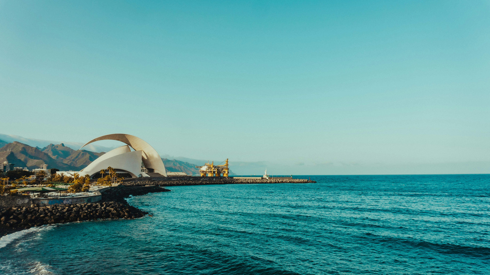
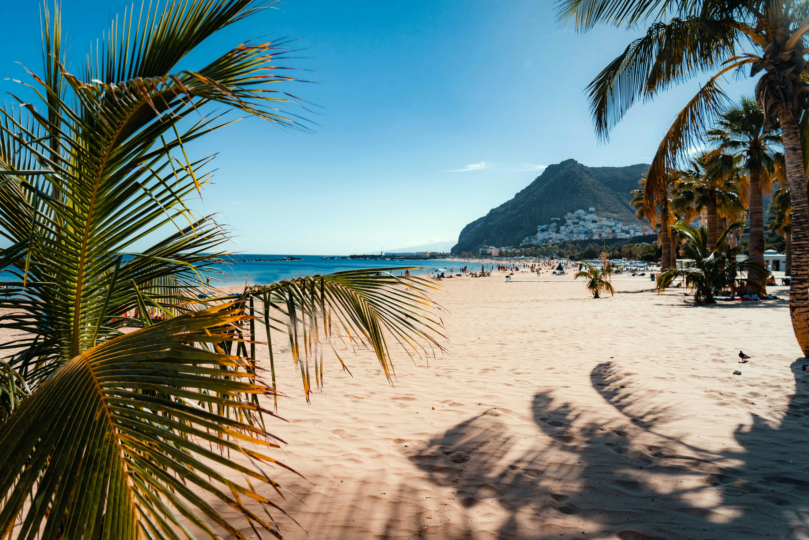

Tenerife 2009 —
cocktails, volcanoes and medieval knights
We went to Tenerife in 2009 for a week and stayed in Playa de las Américas — the classic sun-holiday base for beach days, restaurants, cocktails and easy day trips. A lot of the week was exactly what Tenerife does best: lazing on the beach, sipping cocktails, wandering along the resort strip and doing very little with great enthusiasm. But we also packed in a few proper Tenerife experiences — Mount Teide, Loro Parque, dolphin shows, dramatic cliffs, boat trips, black sand beaches, markets, mountain villages and one brilliantly chaotic medieval evening show that was almost certainly Castillo San Miguel.
.jpg)
.jpg)
.jpg)
.jpg)
.jpg)



A week in Playa de las Américas
We stayed in Playa de las Américas, which was exactly where you wanted to be if you were going to Tenerife for a week of sun, beach, food, drinks and easy access to all the big tourist day trips. It had that full 2000s holiday atmosphere — busy promenades, beach bars, restaurants everywhere, souvenir shops, Irish and British holidaymakers, cocktails that arrived with umbrellas in them and the constant sense that there was always something to book for the next day.
Most of the holiday was gloriously uncomplicated: lying on the beach, wandering around the resort, stopping for drinks, eating out and generally doing nothing in the way only a good sun holiday lets you do. But Tenerife is also one of those islands where the day trips are genuinely worth doing. In one week, you can go from a beach lounger to volcanic lava fields, from a dolphin show to black sand beaches, from mountain villages to whale watching, and from a normal dinner to a full medieval jousting tournament.
The evening show we remember was almost certainly Castillo San Miguel — Tenerife's famous medieval dinner show with knights, horses, cheering sections and everyone eating the meal medieval-style with no cutlery. Loads of Irish holidaymakers went there in the 2000s, and it had exactly that brilliant holiday-night-out chaos: coach pick-up, dramatic castle entrance, coloured teams, horses thundering past and a crowd absolutely committed to shouting for their knight.
The classic Tenerife holiday base
Playa de las Américas is one of Tenerife's best-known resort areas and it made a perfect base for a week in 2009. It is lively, sunny, easy, tourist-friendly and close to beaches, bars, restaurants, shopping areas and excursions. It is not the quiet hidden-gem side of Tenerife — and that is exactly the point. For a proper sun holiday, it does the job brilliantly.
This was the heart of the trip: lazing on the beach, drinking cocktails, walking along the promenade and making very few plans. Tenerife is brilliant for that kind of holiday because everything is easy — beach in the morning, lunch somewhere casual, pool or promenade in the afternoon, dinner and drinks in the evening.
Playa de las Américas in the 2000s had that unmistakable package-holiday feel — neon signs, menus in every language, tribute acts, late-night bars, souvenir shops and Irish holidaymakers everywhere. It was not trying to be subtle. It was trying to be fun. And it succeeded.
The famous Tenerife medieval dinner show
That castle evening show we remember was almost certainly Castillo San Miguel — one of those brilliantly theatrical Tenerife nights that practically every Irish and British holidaymaker seemed to do at some stage in the 2000s. It had everything: a castle-style setting, knights in armour, horses, cheering sections, dramatic lighting, a big dinner and the novelty of eating medieval-style with no cutlery.
The whole thing was gloriously over the top. Guests were divided into coloured sections and encouraged to cheer for their knight as they jousted and performed on horseback. It was part dinner show, part pantomime, part school tour chaos and part holiday rite of passage. You did not go for subtlety. You went to shout yourself hoarse for a man in armour while trying to eat chicken with your hands.
For us, it is one of the strongest Tenerife memories because it captures exactly what those 2000s Canary Islands package holidays were like — fun, slightly ridiculous, social, theatrical and completely committed to giving tourists a night out they would remember.
From beach resort to lava fields
Mount Teide is the enormous volcanic centrepiece of Tenerife and one of the island's must-do day trips. Coach tours from Playa de las Américas typically climb from the coast up through changing landscapes — palm trees giving way to pine forest, then lunar-looking lava fields, volcanic rock formations and wide open views that feel a world away from the beach resorts.
Teide National Park is where you realise Tenerife is much more than beaches and nightlife. The volcanic landscape is huge, dry, dramatic and strange — all lava rock, craters, viewpoints and twisting mountain roads. Even if you are not a big hiker, a coach tour gives you the scale and spectacle without needing to do anything too strenuous.
The best part of the Mount Teide trip is the contrast. One minute you are in a resort sipping cocktails; a few hours later you are standing in a volcanic national park that looks like a film set. It is easily one of the most memorable Tenerife day trips.
The two big Tenerife attractions
Loro Parque was one of the classic Tenerife day trips — a huge animal and parrot park in Puerto de la Cruz with big shows, including dolphins and orcas, plus penguins, parrots and tropical planting everywhere. Our photos from the trip have that unmistakable dolphin-show memory stamped all over them. For many visitors in the 2000s, Loro Parque was one of the main reasons to leave the southern resorts for a day.
Siam Park had only opened in 2008, so by 2009 it was the brand-new superstar attraction in Tenerife. With Thai-style theming, huge slides, a wave pool and tropical design, it immediately became one of the island's most popular days out. Even if you are not a massive water-park person, it was impossible not to hear about it on holiday in Tenerife at the time.
The Tenerife beyond the resort strip
Los Gigantes is one of the most dramatic coastal sights in Tenerife — enormous sea cliffs rising straight from the Atlantic. They are especially impressive from the water, which is why so many boat trips include them.
Whale and dolphin watching boat trips from Puerto Colón were a classic Tenerife excursion and still are. You get out onto the Atlantic, often with views back towards the south coast and across towards La Gomera, and the chance of seeing dolphins or pilot whales in the waters around the island.
The black sand beaches in the north show a completely different side of Tenerife. They are darker, more volcanic, more atmospheric and far removed from the golden-sand resort image many people have of the island.
Coach trips through mountain villages like Masca are another classic Tenerife experience. The roads are twisty, the views are huge and the village itself feels tucked away in a completely different world from Playa de las Américas.
Markets, submarines and classic holiday extras
Tenerife holidays in the 2000s came with a very particular menu of optional extras. You could spend one day at a market, another on a boat, another at a dinner show, another at a theme park and still somehow convince yourself you had mostly gone for a relaxing beach holiday.
The markets around Costa Adeje and Los Cristianos were classic resort-day wandering: bags, belts, sunglasses, jewellery, souvenirs, beachwear and the full holiday-market atmosphere. Perfect for a morning when you wanted to do something but not commit to a full excursion.
Submarine trips were such a 2000s Tenerife tourist thing — one of those excursions you saw advertised everywhere. The idea of sitting underwater looking out at fish through little windows felt very futuristic and very package-holiday at the same time.
What made Tenerife memorable
Playa de las Américas gave us exactly what we wanted: beach, cocktails, restaurants, promenade walks, nightlife and an easy base for tours.
A complete change of scenery from the resort strip — volcanic landscapes, lava fields, pine forests and big mountain views.
Knights, horses, cheering, medieval dinner and no cutlery. A gloriously theatrical Tenerife night out and pure 2000s package holiday magic.
One of Tenerife's classic big attractions — dolphins, parrots, penguins, tropical gardens and the kind of animal shows everyone remembers from holidays of that era.
Freshly opened in 2008 and already hugely popular by 2009 — Thai theming, slides, water rides and one of the biggest buzzes on the island.
Dramatic sea cliffs, Atlantic views, whale and dolphin watching from Puerto Colón and the sense of Tenerife as an ocean island, not just a resort.
Book a Tenerife trip through TourRadar
Tenerife is easy to explore independently, but a guided trip is ideal if you want the volcano, coast, villages and day-trip logistics handled for you. TourRadar has Tenerife and Canary Islands options that help you see more than just the resort strip.
Disclosure: This is an affiliate link. If you book through it we may earn a small commission at no extra cost to you.
Book Tenerife activities — GetYourGuide
Mount Teide tours, whale and dolphin watching, Siam Park tickets, Loro Parque, Los Gigantes boat trips, Masca excursions and Tenerife evening shows — book your activities in advance.
Disclosure: If you book through this link we may earn a small commission at no extra cost to you.
Book Tenerife activities on Klook
Klook is handy for comparing Tenerife tours, attraction tickets and day trips — especially if you want to browse Mount Teide, Siam Park, Loro Parque, boat trips and resort transfers in one place.
Disclosure: This is an affiliate link. If you book through it we may earn a small commission at no extra cost to you.
Common questions
Tenerife FAQ
What to pack for Tenerife
Tenerife packing essentials
Tenerife is sunny and easy, but the island changes fast when you head inland or up towards Mount Teide. Pack for beach days, boat trips, hot resort evenings and cooler volcanic viewpoints.
Keep maps, bookings and activity tickets handy without hunting for Wi-Fi around the resort.
View on Amazon →Spain uses European plugs, so an adaptor is essential if you are travelling from Ireland or the UK.
View on Amazon →Useful for long Teide, Loro Parque or whale-watching days when your phone is doing maps, photos and tickets.
View on Amazon →Ideal for sunscreen, water, phone, wallet, camera and bits you need on coach trips or boat trips.
View on Amazon →A reusable bottle is handy in the heat, especially on Teide tours, markets and long promenade walks.
View on Amazon →Always useful for blisters, bites, headaches, little cuts and general holiday mishaps.
View on Amazon →Non-negotiable. Tenerife sun can catch you quickly, especially on boat trips and around the pool.
View on Amazon →Useful for warm evenings, resort terraces and rural or garden-heavy excursions.
View on Amazon →Worth packing if you plan to visit Mount Teide, Masca or volcanic viewpoints with uneven ground.
View on Amazon →Great for beach days, markets, boat trips and long sunny walks around the resort.
View on Amazon →Light, comfortable and ideal for evenings when you want to look dressed without overheating.
View on Amazon →Handy travel toiletries for resort stays, beach days and post-pool showers.
View on Amazon →A compact toiletries kit keeps everything together for pool, shower and beach routines.
View on Amazon →Disclosure: These are Amazon affiliate links. If you buy through them we may earn a small commission at no extra cost to you.
More guides you might like
If Tenerife is your kind of trip — sun, islands, day trips and easy exploring — these guides fit the same travel mood.
Our Spain guide — mainland cities, islands, food, culture and sunshine.
Read the Spain guide →Another brilliant option for sun, coast, city breaks and easy-going holidays.
Read the Portugal guide →Rock views, monkeys, British-meets-Mediterranean energy and a very different kind of sunshine escape.
Read the Gibraltar guide →Planning a trip to Tenerife?
Base yourself in Playa de las Américas or Costa Adeje, spend a few days on the beach, then book the volcano, whale watching, Los Gigantes, Loro Parque, Siam Park, Masca and one gloriously over-the-top evening show. Tenerife is popular for a reason.
Affiliate disclosure: if you book through our links we may earn a small commission at no cost to you. We only recommend experiences we would genuinely consider ourselves.